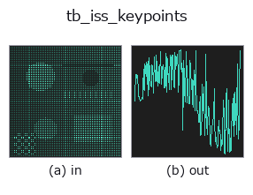

typed op• 数据种类:points → signal
• 调用:fullseye.apply(img, "tb_iss_keypoints", a=0.5, b=0.5)(2-D 的模型是一张图 + 两个标量旋钮 a,b∈[0,1])

*图为在 128×128 合成输入上实际运行的输出。左为输入，右为输出。点云以俯视散点显示(亮度 = z)，一维序列为折线，体数据为沿 z 的最大值投影，视频为中间帧，复数图像为幅值；无法成像的返回值直接显示数值。*
扫描旋钮 a(0.1 / 0.5 / 0.9，另一旋钮取默认):
▸ tb_iss_keypoints: knob a sweep (docs site)
扫描旋钮 b(0.1 / 0.5 / 0.9，另一旋钮取默认):
▸ tb_iss_keypoints: knob b sweep (docs site)
阶段(前置算子 → 本算子，从左到右):
▸ tb_iss_keypoints: stages (docs site)
换别的图像(合成场景 / 照片 / 硬币。上排为输入，下排为对应输出。旋钮取默认):
▸ tb_iss_keypoints: other inputs (docs site)
ISS（Intrinsic Shape Signatures，相当于 3D 版 Harris）关键点检测。以局部协方差的最小特征值 λ3 作为 saliency，仅将特征值 distinct（方向 well-defined）的点作为候选，再用 NMS 稀疏地选取。旋转不变。返回值 = 点的索引数组。
> 以下的详细说明为原文 —— 摘要与标题已翻译。
引数:
• `points (N,3)。radius`: saliency 用の近傍球半径(点群と同じ単位)。
• `nms_radius: 非最大抑制の距離。None なら 0.6*radius`。
• `gamma21・gamma32`: 固有値比 λ2/λ1、λ3/λ2 の上限(既定 0.99)。両方ともこれ
未満の点だけが候補(比が 1 に近い=等方で向きが決まらない点を除く)。
• `max_kp: 返す上限。min_neighbors`: 近傍がこれ未満の点は候補にしない(既定 8)。
手順: 各点で `radius` 内の近傍を集め、注目点を原点とした 2 次モーメント行列
`(qᵀq)/n` の固有値 λ1≥λ2≥λ3 を求める(λ1 が 1e-12 以下なら除外)。λ3 を saliency と
して降順に走査し、採用済みの点から `nms_radius` 未満にあるものを捨てる貪欲 NMS。
返り値は int64 の点インデックス配列(saliency 降順)。候補が無ければ長さ 0。
注意: 近傍は注目点で中心化する(重心ではない)ため、平面上の点でも λ3 は厳密には 0 に
ならない。全点で近傍探索する Python ループなので、数万点を超える雲は
`voxel_grid_downsample で間引いてから使う。shot_descriptor` のキーポイント入力に
直結し、`register_shot は内部で radius` の 0.6 倍・NMS 0.3 倍で呼ぶ。
2-D 進化レジストリへ橋渡しした 3d の op `iss_keypoints。実装は同じで、呼び出し規約だけ op(v, a, b) に合わせてある。a が gamma21(既定 0.99)、b が gamma32`(既定 0.99)を振る。
• 示例数据目录(下载 URL / 许可证) —— 2-D 用 skimage.data(BSD/公有领域)加合成图,3-D 给出真实数据源(Stanford/PDS 等)的下载 URL。
• 算子来历与参考文献 —— 该算子族所依据的研究/方法出处。
下面的程序已确认可以运行(与图相同的输入)。在 Studio 帮助中，此块会变成按钮，可当场加载并运行。
img_to_points 0.50 0.50 tb_iss_keypoints 0.50 0.50
▸ Load this pipeline · Load & run
下面的示例调用的是底层账本算子 iss_keypoints。此桥接算子只是把同一实现适配为 fn(v, a, b) 约定，行为完全相同(只是调用形式不同)。
• feature_register — py -3.11 examples_3d/feature_register.py
signal 作为输入)identity · tb_create_funct_1d_array · tb_smooth_funct_1d_gauss · tb_smooth_funct_1d_mean · tb_derivate_funct_1d · tb_integrate_funct_1d · tb_zero_crossings_funct_1d · tb_abs_funct_1d
typed)tb_points_to_voxel · tb_estimate_point_normals · tb_angle_3points · tb_project_points · tb_render_point_depth · tb_statistical_outlier_removal · tb_radius_outlier_removal · tb_voxel_grid_downsample
*Provenance: ops.py — 2D 算子登记表。本条目由 tools/opdocs.py md 自动生成(请勿手工编辑)。*
© 2026 Kazufumi Furuse — Fullseye operator documentation. Licensed under Apache-2.0.
{kind=link}
{kind=link}
{kind=link}
{kind=link}